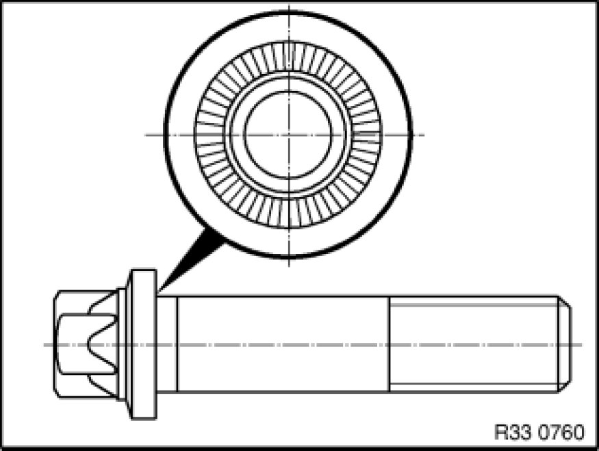

Operation CHARM
: Car repair manuals for everyone.
Home
>>
BMW
>>
2007
>>
X3 3.0si (E83) L6-3.0L (N52K)
>>
Repair and Diagnosis
>>
Transmission and Drivetrain
>>
Differential Assembly
>>
Service and Repair
>>
Removal and Replacement
>>
Rear Axle
>>
Ribbed Teeth
Ribbed Teeth
33 21 ... - Ribbed teeth

Important!
Bolts with ribbed teeth must be replaced after they have been released!